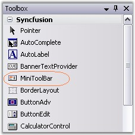
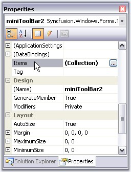
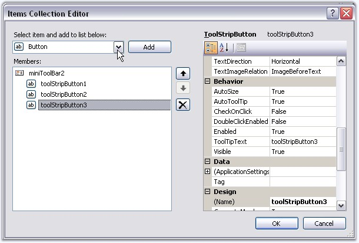
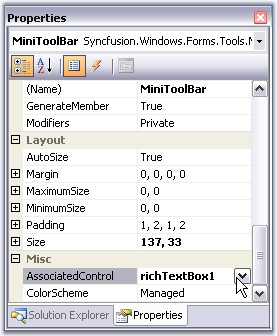
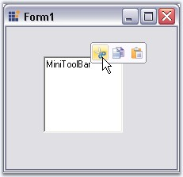
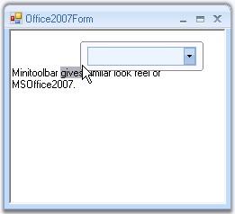

The sub topics under this section will guide you to create a MiniToolBar control, add controls to it and then associate it with a control. The topics are as follows.
To add a MiniToolBar to the form, follow the below given steps.
· Drag and drop a MiniToolBar from the toolbox.

Figure 1396: MiniToolBar in Toolbox
· Open the Items Collection Editor of the MiniToolBar.

Figure 1397: Items property in the Properties Grid
· Add the required items into the MiniToolBar from the Items collection Editor and click Ok.

Figure 1398: Items Collection Editor
· Now, drag and drop the control with which the MiniToolBar is to be associated, for eg. a RichTextBox.
· Set the MiniToolBar's AssociatedControl property to the control to which this is to be associated.

Figure 1399: AssociatedControl property of MiniToolBar
· Run the sample and right-click on the RichTextBox to view the MiniToolBar.

Figure 1400: MiniToolBar created Through Designer
 Note: You can also show a MiniToolBar by
just selecting the text, as in MSOffice2007, using MouseUp event of the
particular control.
Note: You can also show a MiniToolBar by
just selecting the text, as in MSOffice2007, using MouseUp event of the
particular control.
A sample which demonstrates this features is available in the below sample installation location.
..\My Documents\Syncfusion\EssentialStudio\Version Number\Windows\Tools.Windows\Samples\2.0\Office2007 Controls\MiniToolBarDemo
See Also
Creating MiniToolBar Through Code
This section guides you with the steps to add a MiniToolbar and associating with a RichTextBox control programmatically.
· Add the below namespaces.
|
[C#]
using Syncfusion.Windows.Forms; using Syncfusion.Windows.Forms.Tools; |
|
[VB]
Imports Syncfusion.Windows.Forms Imports Syncfusion.Windows.Forms.Tools |
· Declare and Initialize the MiniToolBar control. Also declare the controls to be added to the MiniToolBar, and also the control (in this case RichTextBox) to which MiniToolBar is to be associated.
|
[C#]
private Syncfusion.Windows.Forms.Tools.MiniToolBar MiniToolBar; private System.Windows.Forms.RichTextBox richTextBox1;
//Control to be added to the MiniToolBar private Syncfusion.Windows.Forms.Tools.ToolStripPanelItem MiniToolBarPanelItem; private Syncfusion.Windows.Forms.Tools.ToolStripPanelItem PanelItem1; private System.Windows.Forms.ToolStripComboBox FontFaceCombo;
//initializing this.MiniToolBar = new Syncfusion.Windows.Forms.Tools.MiniToolBar(); this.richTextBox1 = new System.Windows.Forms.RichTextBox(); this.MiniToolBarPanelItem = new Syncfusion.Windows.Forms.Tools.ToolStripPanelItem(); this.PanelItem1 = new Syncfusion.Windows.Forms.Tools.ToolStripPanelItem(); this.FontFaceCombo = new System.Windows.Forms.ToolStripComboBox(); |
|
[VB]
Private MiniToolBar As Syncfusion.Windows.Forms.Tools.MiniToolBar Private richTextBox1 As System.Windows.Forms.RichTextBox
'Control to be added to the MiniToolBar Private MiniToolBarPanelItem As Syncfusion.Windows.Forms.Tools.ToolStripPanelItem Private PanelItem1 As Syncfusion.Windows.Forms.Tools.ToolStripPanelItem Private FontFaceCombo As System.Windows.Forms.ToolStripComboBox
'Initializing Me.MiniToolBar = New Syncfusion.Windows.Forms.Tools.MiniToolBar() Me.richTextBox1 = New System.Windows.Forms.RichTextBox() Me.MiniToolBarPanelItem = New Syncfusion.Windows.Forms.Tools.ToolStripPanelItem() Me.PanelItem1 = New Syncfusion.Windows.Forms.Tools.ToolStripPanelItem() Me.FontFaceCombo = New System.Windows.Forms.ToolStripComboBox() |
· Add the required items into the MiniToolBar.
|
[C#]
//Adding Panel this.MiniToolBar.Items.AddRange(new System.Windows.Forms.ToolStripItem[] {this.MiniToolBarPanelItem});
//Customizing MiniToolBarPanelItem this.MiniToolBarPanelItem.ForeColor = System.Drawing.Color.MidnightBlue; this.MiniToolBarPanelItem.Items.AddRange(new System.Windows.Forms.ToolStripItem[] {this.PanelItem1});
//Customizing the Panel this.PanelItem1.Items.AddRange(new System.Windows.Forms.ToolStripItem[] {this.FontFaceCombo});
//Customizing the FontFaceCombo this.FontFaceCombo.DropDownStyle = System.Windows.Forms.ComboBoxStyle.DropDownList; |
|
[VB]
'Adding Panel Me.MiniToolBar.Items.AddRange(New System.Windows.Forms.ToolStripItem() {Me.MiniToolBarPanelItem})
'Customizing MiniToolBarPanelItem Me.MiniToolBarPanelItem.ForeColor = System.Drawing.Color.MidnightBlue Me.MiniToolBarPanelItem.Items.AddRange(New System.Windows.Forms.ToolStripItem() {Me.PanelItem1})
'Customizing the Panel Me.PanelItem1.Items.AddRange(New System.Windows.Forms.ToolStripItem() {Me.FontFaceCombo})
'Customizing the FontFaceCombo Me.FontFaceCombo.DropDownStyle = System.Windows.Forms.ComboBoxStyle.DropDownList |
· Set the MiniToolBar's AssociatedControl property to the RichTextBox to which this is to be associated.
|
[C#]
//Associates the MiniToolBar with the RichTextBox this.MiniToolBar.AssociatedControl = this.richTextBox1; |
|
[VB]
'Associates the MiniToolBar with the RichTextBox Me.MiniToolBar.AssociatedControl = Me.richTextBox1 |
· Run the sample and right-click on the RichTextBox to view the MiniToolBar.

Figure 1401: MiniToolbar with FontFaceCombo on a RichTextBox
A sample which demonstrates how to create and add controls to the MiniToolBar is available in the below sample installation location.
..\My Documents\Syncfusion\EssentialStudio\Version Number\Windows\Tools.Windows\Samples\2.0\Office2007 Controls\MiniToolBarDemo